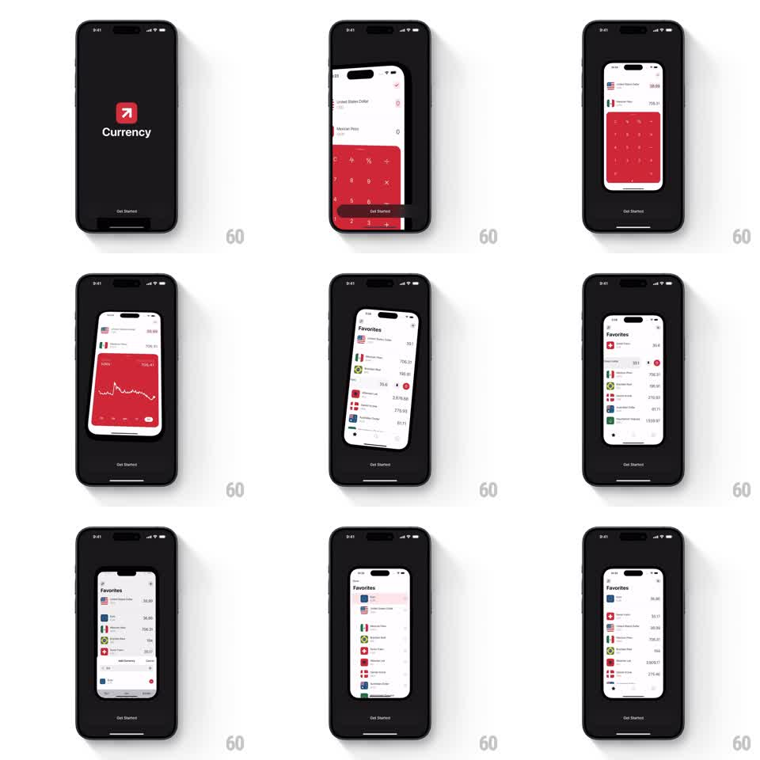

Media
Frame-by-frame

Rebuild this animation 1:1: the Currency app's intro sequence - the logo screen gives way to a 3D-tilting phone mockup that tours the app's feature screens (converter keypad, rate chart, favorites list) before looping back.

Rebuild this animation 1:1: the Currency app's intro sequence - the logo screen gives way to a 3D-tilting phone mockup that tours the app's feature screens (converter keypad, rate chart, favorites list) before looping back. ## Integration Integration: stack-agnostic spec - springs given as stiffness/damping, timed motions as duration + curve; map every value to your framework and animation library of choice. ## Scene A black intro screen: the red Currency logo with "Currency" beneath it and a "Get Started" pill at the bottom. The logo view pulls back into a 3D phone mockup floating on the black background, tilting in perspective. Inside the mockup, the app cycles through its screens: the red-keypad converter with flag-prefixed currency rows, a full-red rate chart with a white line graph, and the scrolling "Favorites" list of currency rows with flags and values. ## Motion spec Pattern: 3D device feature tour, ~10s loop. - The logo screen scales down and tilts into the floating phone (700ms, ease-out), gaining perspective (rotateY ~25 degrees) and a soft floor shadow. - The phone sways gently between feature beats (rotateY 15 to 30 degrees, 3s per sway, ease-in-out). - Feature screens crossfade inside the mockup every ~2.5s (400ms), each briefly alive: the favorites list scrolls, the chart line draws. - The "Get Started" pill stays pinned at the bottom of the outer screen, never tilting. - The sequence loops back to the logo view with the reverse tilt-and-scale (600ms). ## Calibration - The mockup reads as a real device - notch, bezel, and shadow hold up at every angle. - Only the mockup interior changes per feature; the stage stays black. ## Reduced motion Feature screens crossfade in a static upright mockup. ## Don't miss - The tilt is continuous perspective sway, not a fixed isometric pose. - The outer "Get Started" button belongs to the intro screen, not the mockup.